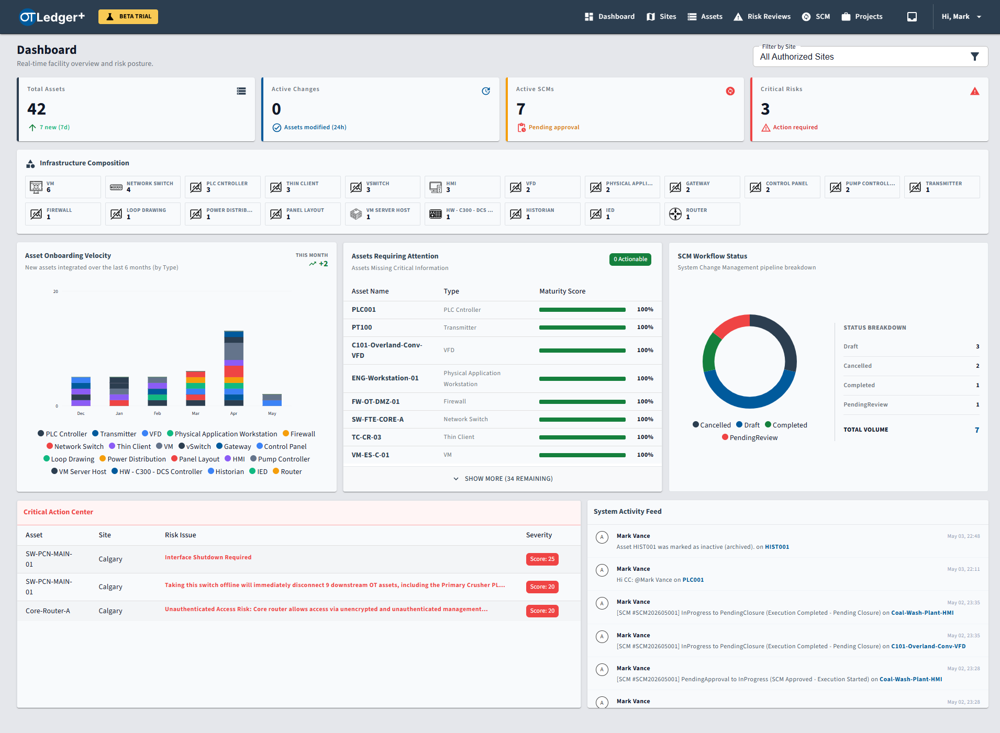
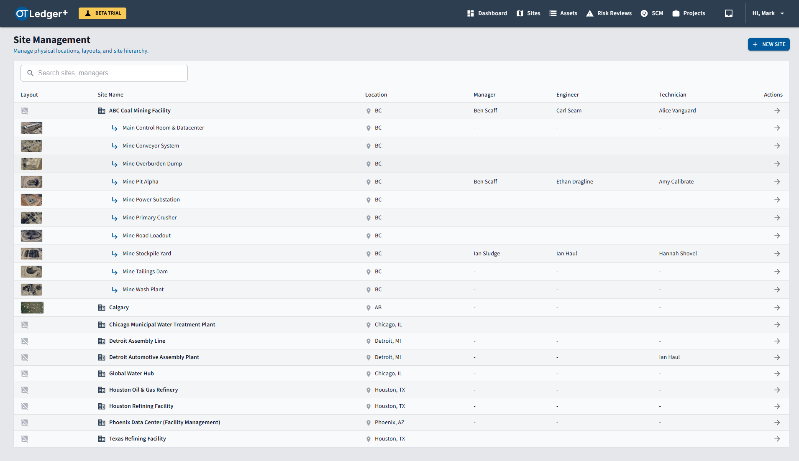
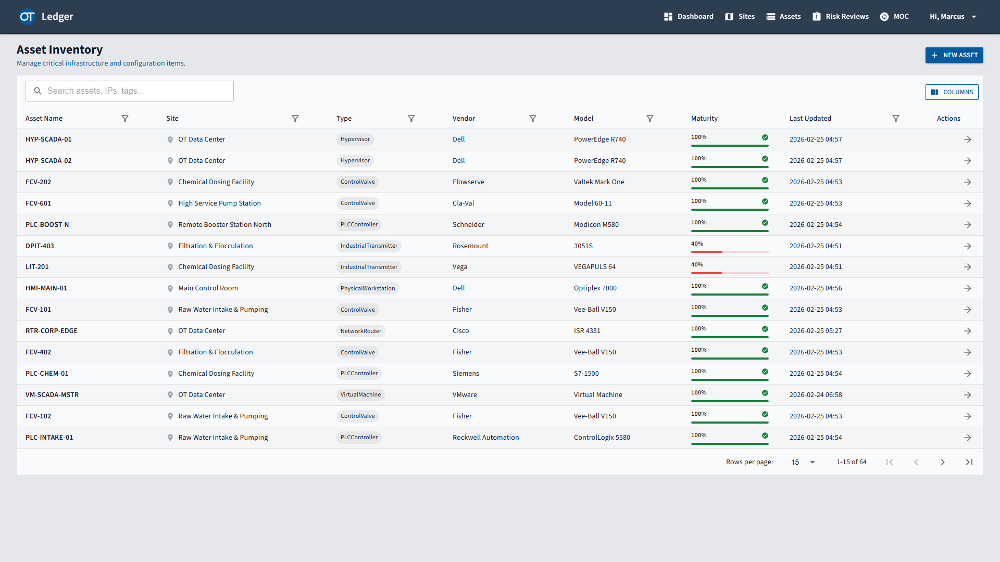
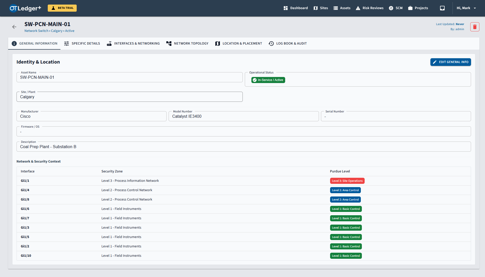
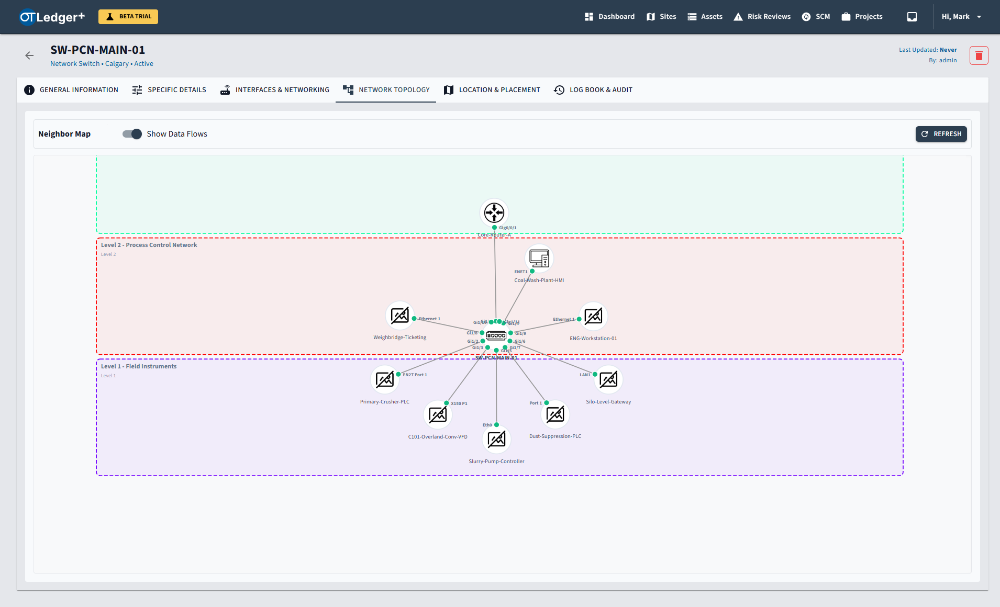
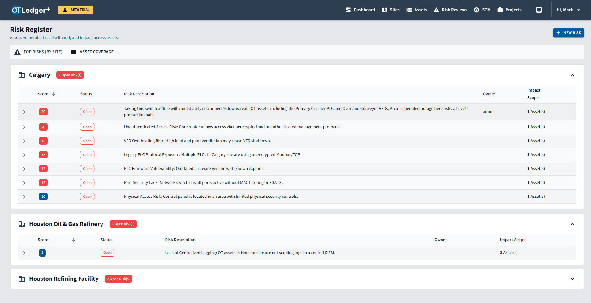
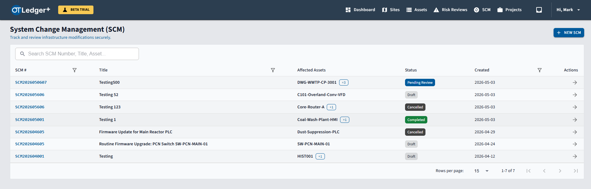
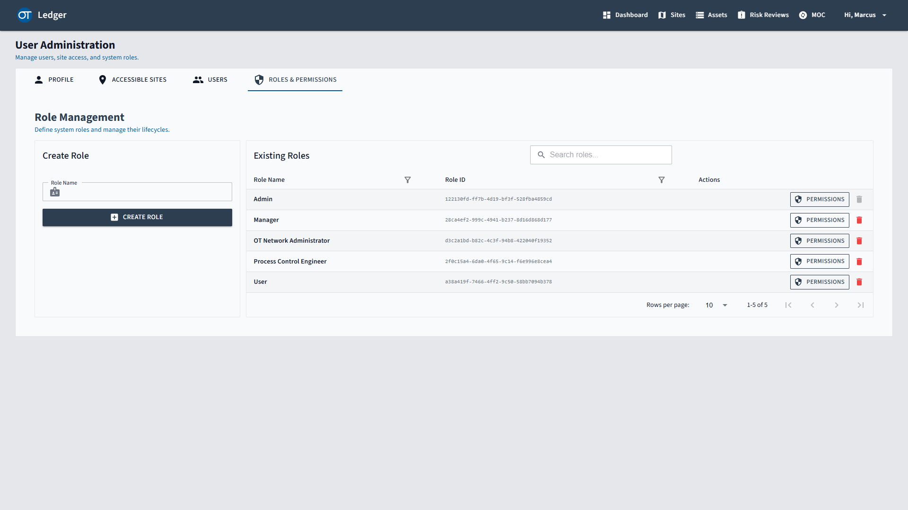

Stop rebuilding work from scratch. Bring clarity, structure, and reliable data to your industrial automation and control systems.

In an ever-growing, complex OT environment, relying on memory isn't an option. The stakes are physical, operational, and financial. OTLedger provides the structure and clarity required for decisive, secure action.
Teams too often rely on scattered information: static spreadsheets, buried folders, and tribal knowledge. When information changes, professionals repeat work, draining time and introducing risk.
OTLedger serves as a dynamic, centralized master register. More than just an inventory, it structures day-to-day tasks, ensuring teams have the exact data and references they need, exactly when they need them.
Eliminate rework and reduce human error. OTLedger captures workflow history, documents complex processes, and turns scattered task knowledge into reusable assets for continuous risk management.
Structure your organization logically. Map physical plants, sub-sites, and control rooms. Assign dedicated Facility Managers and Engineers to oversee specific geographic or operational areas.


OTLedger covers any asset—meaning any device with a network or connection interface falls under the asset category. OTLedger provides the ability for users to create custom attributes specific to each asset type based on their unique needs and requirements.
Coming Next: Engineering drawings and soft tags will be introduced, along with related functionality to support a broader scope of IACS work.
Raw IP addresses offer zero operational context. OTLedger transforms flat network data by allowing you to build Virtual Zones mapped directly to the Purdue Enterprise Reference Architecture. Instantly visualize exactly where a device sits within the plant hierarchy, complete with its first-level physical connections and logical data flows.


While Virtual Zones define where assets reside, Policies define how they are allowed to communicate. Establish secure conduits by defining the exact authorized Data Channels and flows between your zones. Specify the permitted IP interfaces and protocols (e.g., Modbus TCP, OPC UA). If your IDS detects traffic crossing boundaries outside these explicitly defined channels, you immediately know it is anomalous drift.
Coming Next: Dynamic generation of ISA/IEC 62443 Zones and Conduit style visual network diagrams, rendered directly from your configuration data.
Stop tracking vulnerabilities in disconnected Excel files. Attach risks directly to the impacted hardware. Calculate severity using Likelihood and Impact matrices, and track mitigation efforts historically.


When a system fails, "What changed?" is the first question. OTLedger’s built-in lightweight SCM engine ensures every firmware update, protocol shift, or new asset is documented, reviewed, and approved before the work is executed and design Intent is updated.
Onboard 3rd party contractors and system integrators safely. Using strict RBAC, you can restrict a vendor's visibility to only the specific Sites or Asset Roles they are contracted to manage.
Coming Next: Seamless integration of OTLedger roles with your existing Domain Controller or central Identity Provider (IdP) for streamlined, centralized access management.

Reach out to us to learn more about the application, explore its capabilities, or to discuss how it can help you or your customer organize and manage their OT infrastructure. OTLedger is currently undergoing beta trials—let us know if you are interested in participating!
info@otledger.com